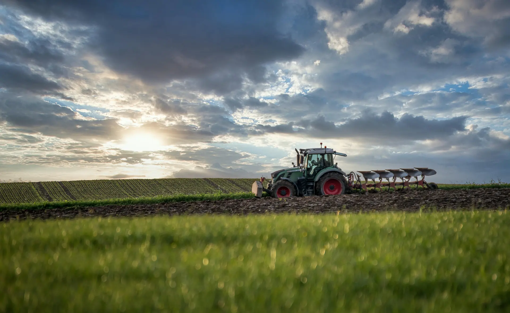
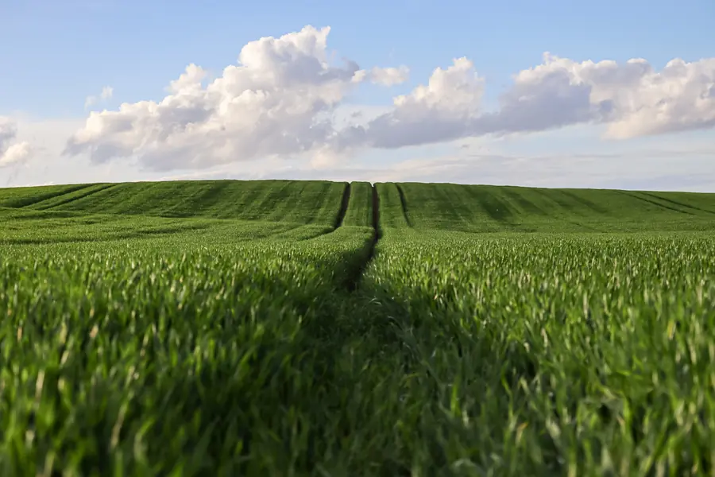
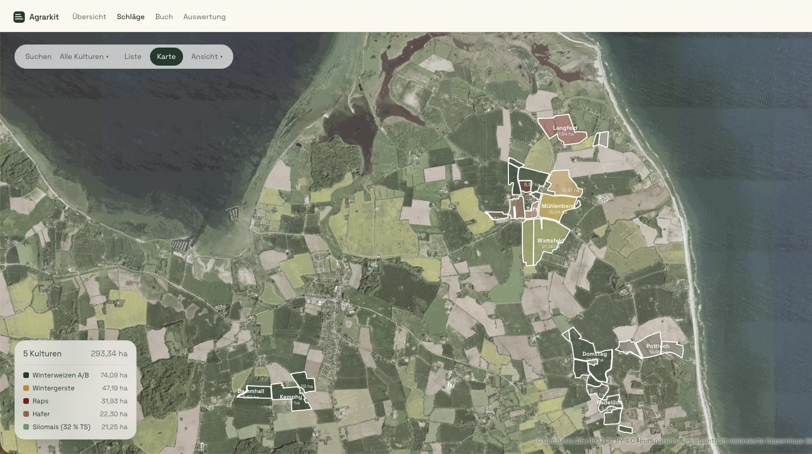
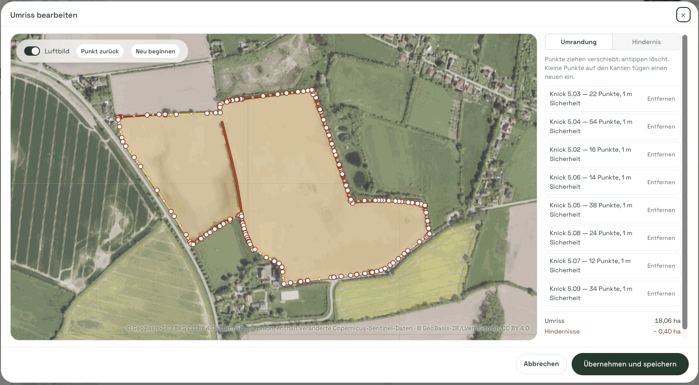
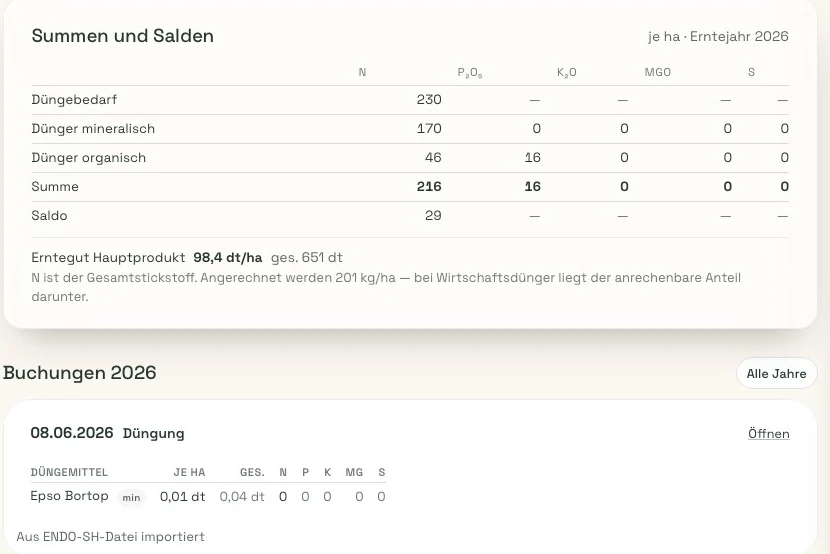
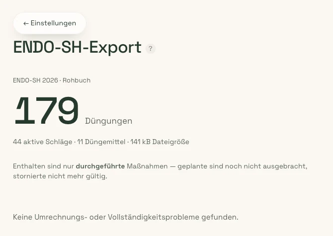
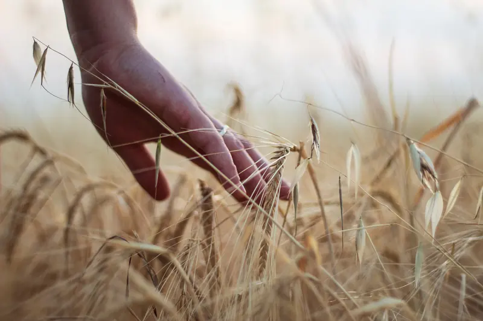
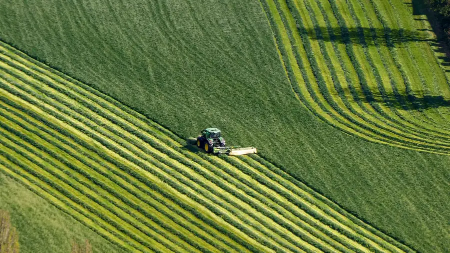

Schläge und Karte
Jeder Schlag mit Nummer, Größe, FLIK, Bodenart und Ackerzahl. Auf der Karte nach Kultur eingefärbt, wahlweise über dem Luftbild — und mit den Hektar, die wirklich zusammenkommen.

Agrarkit ist eine Ackerschlagkartei für den norddeutschen Betrieb. Umrisse mit Knicks und Hindernissen, Düngebedarf mit Saldo, ENDO‑SH rein und wieder raus — ohne dass daraus ein Winterprojekt wird.
Version 1.1 · Beta · Läuft im Browser, ohne Installation
Kein Baukasten mit Modulen, die man einzeln dazubucht. Fünf Bereiche, die zusammengehören, weil sie im Betrieb auch zusammengehören.
Jeder Schlag mit Nummer, Größe, FLIK, Bodenart und Ackerzahl. Auf der Karte nach Kultur eingefärbt, wahlweise über dem Luftbild — und mit den Hektar, die wirklich zusammenkommen.
Düngung, Ernte, Maßnahmen — je Schlag oder als Sammelbuchung für mehrere auf einmal. Mit Menge je Hektar und in Summe, damit beim Nachrechnen nichts auseinanderläuft.
Bedarf, mineralisch, organisch, Summe, Saldo — untereinander in einer Tabelle. Bei Wirtschaftsdünger steht daneben, welcher Anteil angerechnet wird und welcher nicht.
Bestandsdaten aus ENDO‑SH einlesen, statt alles abzutippen. Und am Ende des Jahres eine Datei, die geprüft ist, bevor sie das Haus verlässt.

Gemacht fürs Land Nicht für den Schreibtisch alleinGroße Tippziele, hoher Kontrast, keine Menüs in Menüs — weil die Buchung oft am Feldrand entsteht und nicht abends im Büro.
Zwei Ebenen im selben Betrieb: das Rohbuch als das, was gebucht ist — und die Arbeitskopie zum Durchspielen. Die Arbeitskopie ist am wärmeren Grund immer zu erkennen.
Alle Schläge nach Kultur eingefärbt, über dem Luftbild oder auf heller Karte. Die Legende zählt mit, wie viel Hektar auf welche Kultur entfällt.

Den Umriss zieht man mit dem Finger über dem Luftbild — Punkte verschieben, antippen löscht, auf der Kante kommt ein neuer dazu. Knicks liegen als eigene Elemente daneben, jeder mit seinem Sicherheitsabstand.
Unten steht dann, was übrig bleibt: Umriss minus Hindernisse ist die Nutzfläche. Genau die Zahl, mit der weitergerechnet wird.

Für jeden Schlag und jedes Erntejahr eine Tabelle statt einer Zettelsammlung: Düngebedarf, mineralisch, organisch, Summe, Saldo — für N, P₂O₅, K₂O, MgO und S nebeneinander.
Bei Wirtschaftsdünger steht in Klartext daneben, dass N der Gesamtstickstoff ist und welcher Anteil davon angerechnet wird. Darunter jede Buchung einzeln, mit Menge je Hektar und in Summe.

Agrarkit zählt vor dem Herunterladen zusammen, was in der Datei steht: wie viele Düngungen, über wie viele Schläge, mit wie vielen Düngemitteln. Enthalten sind nur durchgeführte Maßnahmen — geplante sind noch nicht ausgebracht, stornierte nicht mehr gültig.
Und wenn beim Umrechnen der Einheiten oder bei der Vollständigkeit etwas nicht stimmt, steht das dort — nicht erst in der Rückmeldung der Behörde.


Aus der PraxisJede Funktion ist entstanden, weil sie auf einem Betrieb gefehlt hat — nicht, weil sie sich gut auf eine Merkmalsliste macht.

Für Schleswig-HolsteinKnicks, ENDO‑SH, Rotes Gebiet, FLIK: was hier zählt, ist eingebaut und nicht als Sonderfall nachgerüstet.
Keine Hotline mit Warteschleife. Eine E-Mail an info@agrarkit.de landet direkt bei dem, der die Software baut.
Agrarkit ist Version 1.1 und noch nicht fertig. Wer jetzt einsteigt, arbeitet mit einer Software, an der noch gebaut wird — und redet mit, was als Nächstes gebaut wird.
Was es später kostet, steht hier, sobald es feststeht. Niemand wird still und leise in ein Abonnement gerutscht: vor einer Umstellung gibt es eine Ansage per E-Mail.
0 € im Monat, für den ganzen Betrieb
Nein. Agrarkit läuft im Browser — auf dem Rechner im Büro genauso wie auf dem Handy im Schlepper. Es gibt nichts einzurichten außer einem Betrieb und einem Passwort.
Wenn Sie bereits mit ENDO‑SH arbeiten, nicht: Agrarkit liest die Bestandsdaten ein und legt Schläge und Buchungen daraus an. Importierte Buchungen bleiben als solche gekennzeichnet, damit später erkennbar bleibt, was von wo kommt.
Das Rohbuch ist der Stand, wie er gebucht ist. Die Arbeitskopie ist derselbe Betrieb zum Durchspielen — für den Fall, dass man etwas ausprobieren will, ohne den Nachweis anzufassen.
Verwechseln kann man beide schwer: die Arbeitskopie hat einen wärmeren Seitengrund, sichtbar auf jedem Bildschirm.
Agrarkit stellt Bedarf, Ausbringung und Saldo je Schlag und Erntejahr gegenüber und weist aus, welcher Anteil bei Wirtschaftsdünger angerechnet wird. Die fachliche Verantwortung für die Düngebedarfsermittlung bleibt beim Betrieb — Agrarkit rechnet und dokumentiert, es berät nicht.
Die Daten gehören dem Betrieb. Sie lassen sich jederzeit als Datei herunterladen und mitnehmen; auf Wunsch wird der Betrieb samt Daten gelöscht. Eine kurze E-Mail an info@agrarkit.de reicht.
Dass die Software benutzbar ist und im Alltag verwendet wird, aber noch wächst. Es kann Fehler geben, und es kommen Funktionen dazu. Wer in der Beta dabei ist, sollte wichtige Nachweise zusätzlich sichern — den Export gibt es genau dafür.
Danach die Schläge aus ENDO‑SH einlesen — und beim nächsten Nachweis ist die Datei schon fertig.